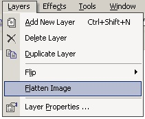

Flatten Image Operation
|
 The Flatten Image Operation (Layers-->Flatten Image) takes the multiple layers of the image and creates a single layer out of them. This is necessary if you need to save an image as a standard graphics file. For instance, a multi-layer image cannot be saved as a JPEG or PNG. A multi-layer image CAN be saved on the disk, though. This multi-layered image is proprietary to Paint.NET, and it is doubtful any other paint package will be able to read the file. |